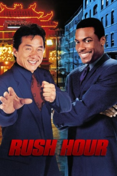

Country:United States, 98 minutes
Spoken languages:
Genres:Action, Comedy, Crime
Director(s):Brett Ratner
Writer(s):Jim Kouf, Ross LaManna
Video Codec:Unknown
Number: 1471


Certification:PG-13
Storyline:
When Hong Kong Inspector Lee is summoned to Los Angeles to investigate a kidnapping, the FBI doesn't want any outside help and assigns cocky LAPD Detective James Carter to distract Lee from the case. Not content to watch the action from the sidelines, Lee and Carter form an unlikely partnership and investigate the case themselves.
Cast:

Medium: Original DVD,
Comments: w/ Rush Hour 2
Loaned: No
Aspect ratio: Unknown